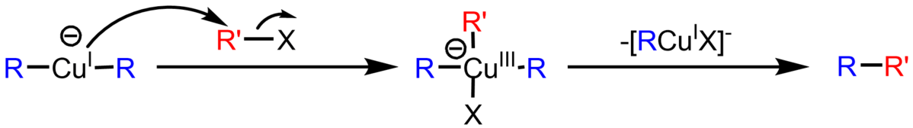

烷基铜锂与卤代烷反应生成烷烃，这是制备烷烃的一种方法
Corey-House-Reaction分为3步进行：
首先，卤代烃与金属锂在无水醚中反应形成烷基锂
接着，烷基锂与碘化亚铜反应生成二烷基铜锂试剂（lithium dialkylcuprate），也被称作 Gilman reagent，以其发现者美国有机化学家 Henry Gilman 的名字命名
最后，R 和 R' 交叉偶联（cross-coupling），形成C-C键；二级/三级卤代烃的作为底物产率很低
值得我们注意的是，当 R 和 R'不同时，主产物为交叉偶联产物R-R'，R-R和R'-R'的生成量很小
Corey-House Reaction是最早被发现的金属参与（metal-mediated）的交叉偶联反应
可能是类似SN2过程。烷基负离子亲核进攻卤代烃
